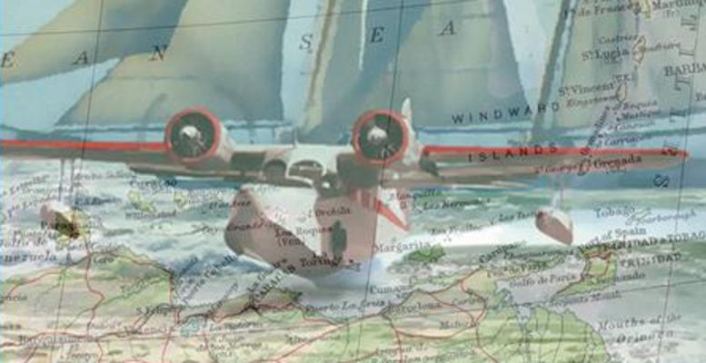

Welcome to Av-tales
Featuring the first novel in a series by Dick Shead: Before A Fall. It's 1938. You are traveling from New York to Brazil in a Grumman Goose. Along the way you will deal with alligators, sharks, spies, and storms. You will see the night spots of Havana and spend time on the beaches in the Windward Islands.
Available as an e-book or paperback. Order from Amazon.com or http://www.wings-press.com/ under GENERAL FICTION/HISTORICAL.